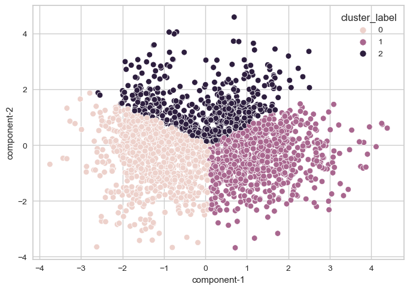
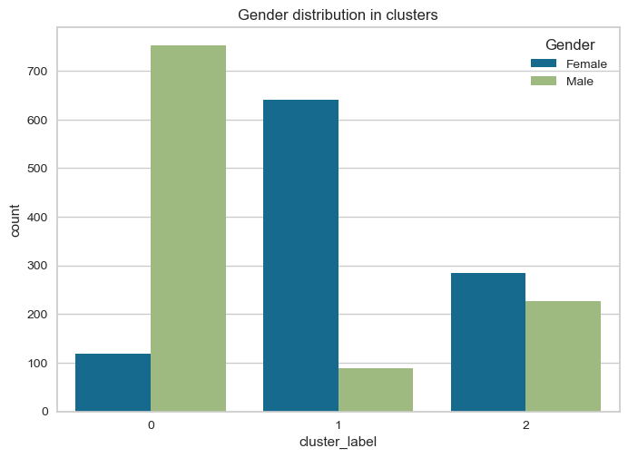

The task is to Perform cluster analyses: do samples cluster by sex?.
Show the code
from sklearn.model_selection import train_test_splitimport pandas as pdimport matplotlib.pyplot as pltimport seaborn as snsimport numpy as npfrom sklearn.base import TransformerMixindata = pd.read_csv('obesity.data.txt', sep='\t')X = data.drop(['WeightClass'], axis=1)y = data['WeightClass']
1 Imputing missing values
This step applies data imputation techniques to fill in missing values in the dataset. For the numerical attribute, the median value will be used from the corresponding gender group; for the categorical attribute, the most occurring category will be used.
Show the code
class ObesityDatasetImputer(TransformerMixin):""" Custom imputer for obesity dataset """def__init__(self):"""Impute missing values. Initialize a dict for storing imputing values for each attribute. """self.fill = {}def fit(self, X, y=None):""" This function fit the imputer which basically compute the imputed value for each attribute. """for col in X.columns:# skip for attribute with no missing valuesif X[col].isnull().sum() ==0:continueif X[col].dtype == np.dtype('O'):self.fill[col] = X[col].mode().iloc[0]else:self.fill[col] = {'male':X.loc[X['Gender'] =='Male',col].median(),'female':X.loc[X['Gender'] =='Female',col].median(), }returnselfdef transform(self, X, y=None):""" This function applies the imputation. """for col in X.columns:# skip for attribute with no missing valuesif X[col].isnull().sum() ==0:continueif X[col].dtype == np.dtype('O'): X[col] = X[col].fillna(self.fill[col])else: X.loc[(X.Gender=='Male') & (X[col].isnull()),[col]] =self.fill[col]['male'] X.loc[(X.Gender=='Female') & (X[col].isnull()),[col]] =self.fill[col]['female']return X
2 Building transformer
The step transform categorical attributes into numerical using one-hot-encoding or label-encoding. In additiona, the scaling of numerical attributes is also performed.
Show the code
from sklearn.base import BaseEstimator, TransformerMixinfrom sklearn.pipeline import Pipelinefrom sklearn.preprocessing import OneHotEncoderclass FeatureSelector(BaseEstimator, TransformerMixin):""" This class buils a feature selector. """def__init__(self, columns):self.columns = columnsdef fit(self, X, y=None):returnselfdef transform(self, X, y=None):return X[self.columns]
K-Means clustering algorithm requires the number of clusters to be specified. The number of clusters can be determined by trying different numbers of clusters and checking how well the data is clustered. The goodness can be computed in terms of the within-cluster sum of squares.
Figure 1 shows the distortion which is the squared distance of each instance from the cluster mean. This figure allows the selection of a number of clusters.
Figure 2 shows the resultant clusters after K-Means clustering. The X and Y axes represent the principal components of data.
Show the code
model = KMeans(n_clusters=3, n_init='auto')cluster_labels = model.fit_predict(X_)cluster_df = pd.DataFrame({'component-1':list(X_[:,0]),'component-2':list(X_[:,1]),'cluster_label':list(cluster_labels),'Gender':X['Gender'],'Class':data['WeightClass']})sns.scatterplot(cluster_df, x='component-1',y='component-2',hue='cluster_label')plt.show()

Figure 2: Clusters after PCA
3.1 Gender distribution in clusters
Figure 3 shows the gender distribution in the resultant clusters. Cluster 1 has more male participants, while Cluster 2 has a high number of female participants. Cluster-3 has a comparatively more balanced gender distribution than cluster-1 and cluster-2.
Show the code
sns.countplot(cluster_df, hue='Gender',x='cluster_label')plt.title('Gender distribution in clusters')plt.show()

Figure 3: Clusters after PCA
The analysis result of clustering with 2 clusters is shown in Figure 4. The figure clearly shows that the two clusters are heavily skewed in terms of gender distribution.
Show the code
model = KMeans(n_clusters=2, n_init='auto')cluster_labels = model.fit_predict(X_)cluster_df = pd.DataFrame({'component-1':list(X_[:,0]),'component-2':list(X_[:,1]),'cluster_label':list(cluster_labels),'Gender':X['Gender'],'Class':data['WeightClass']})
Show the code
sns.countplot(cluster_df, hue='Gender',x='cluster_label')plt.title('Gender distribution in clusters')plt.show()